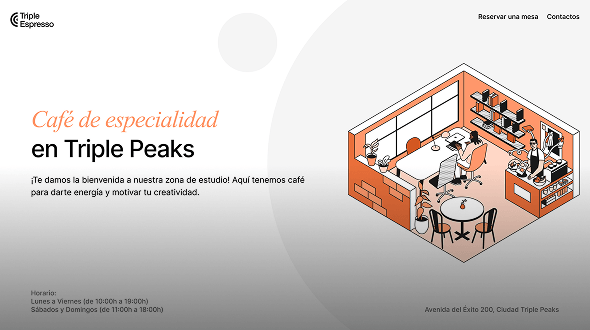

Habilidades y herramientas


Proyectos destacados

Página web de una cafetería
Desarrollo de una landing page responsiva para una cafetería siguiendo un brief de diseño. Incluye estructura semántica, maquetación con Flexbox, creación de secciones nuevas y un formulario de contacto funcional. Logro: Implementé desde cero el diseño completo de la página, organicé el proyecto con buenas prácticas y publiqué la versión final utilizando GitHub Pages.